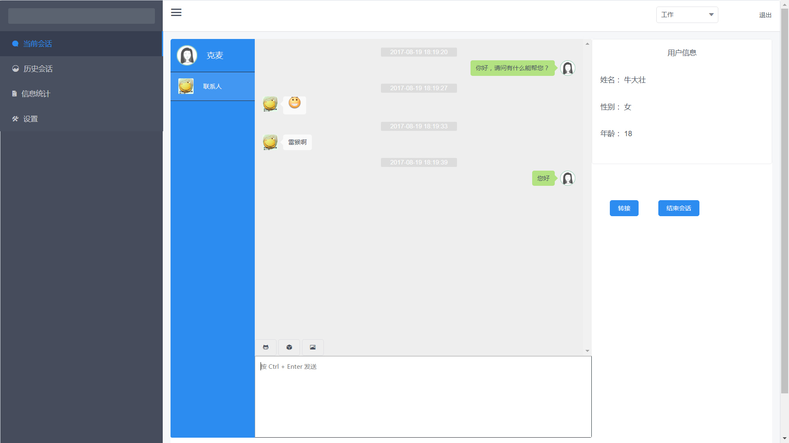
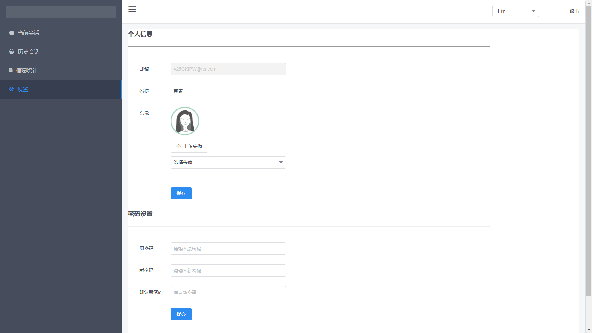
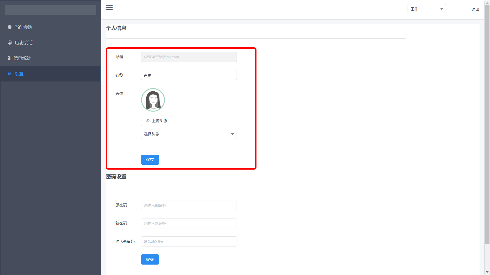

注册和登录
1.注册
在客服注册页面进行注册。

2.登录
用已注册的邮箱进行登录，忘记密码时点击找回密码即可。
当前会话
左侧显示会话中/已结束的会话列表，中间部分为聊天窗口，支持发送文字、表情、图片，右侧为用户信息。其中聊天窗口上方设有关闭按钮，点击即为结束当前会话。
1.切换状态
客服可以根据当前情况将自身状态切换为在线/离线。

2.转接客服
中间聊天窗口上方设有转接按钮，点击转接新的客服后，当前会话自动关闭。
历史会话
历史会话页面显示所有历史会话，并支持点击查看某一会话的聊天内容。

知识库
当前会话页面中，中间聊天窗口上方设有转接按钮，点击转接新的客服后，当前会话自动关闭。
设置
设置页面提供对客服自身信息的设置，包括修改个人信息和修改密码。
1.修改个人信息
可以修改昵称和头像，不支持修改注册邮箱，修改后点击“保存”即可。
2.修改密码
输入原密码和新密码，并确认新密码，点击“提交”即可。